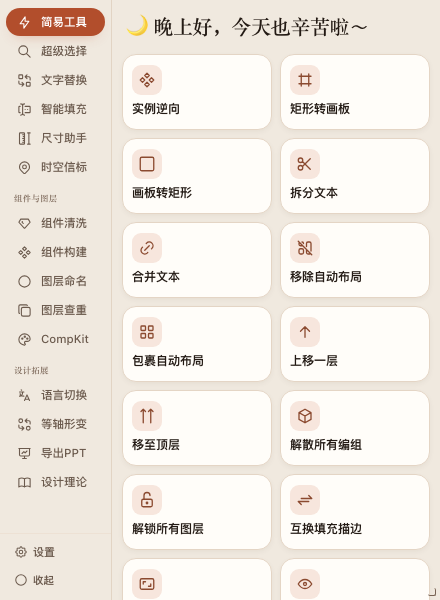
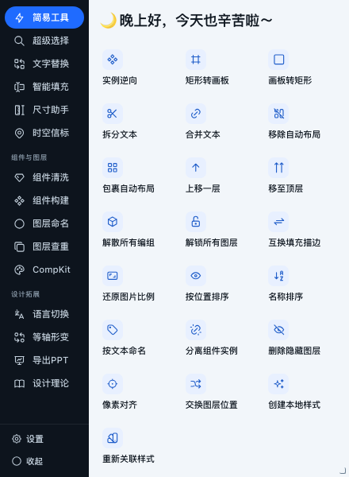
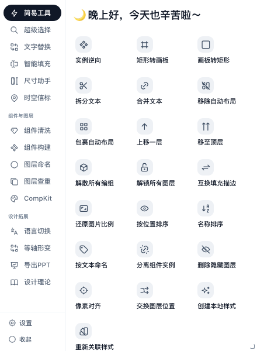
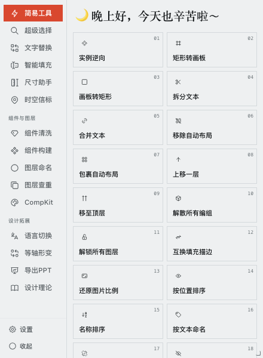

ALL IN ONE / SKINS
六套皮肤，默认卡片
设置 → 插件皮肤。选择后即时生效，保存在本地。六套都覆盖深浅主题与 360 × 520 精简窗口。

卡片CARDS / DEFAULT

暗轨DARK RAIL

白瓷PORCELAIN

索引INDEX

区块BLOCKS

柔光SOFT TACTILE
边界：保留 15 个入口、22 个工具、现有流程与宿主通信。440 × 600 · LIGHT · DEFAULT CARDS